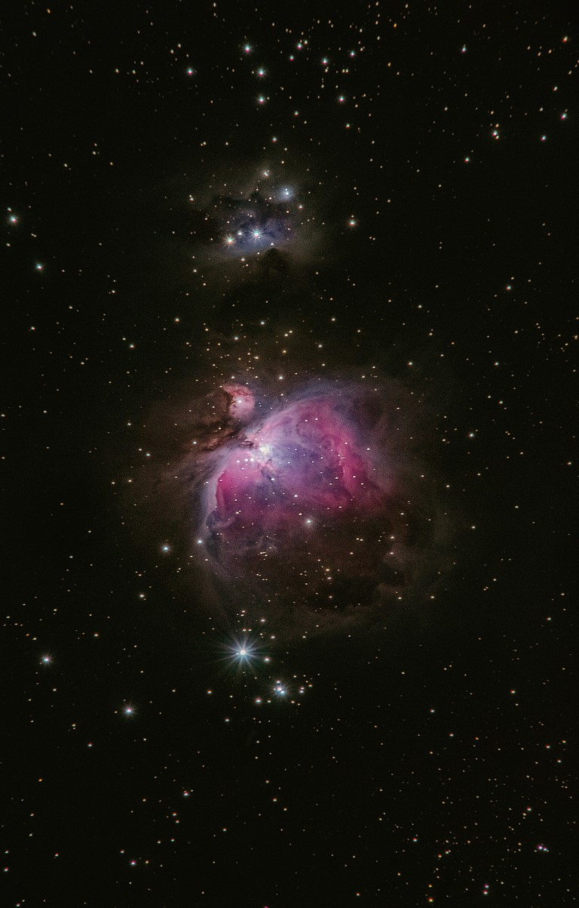
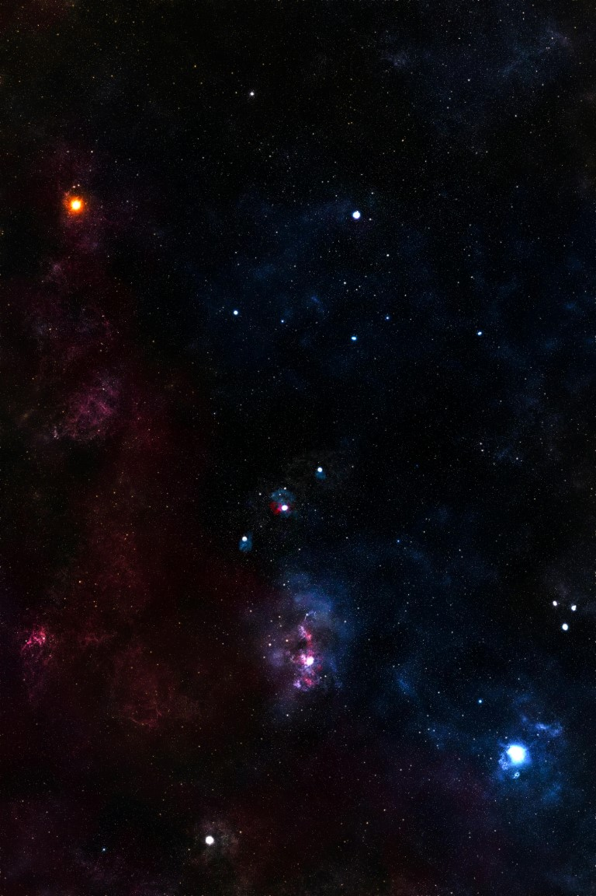

Música
Me gusta tanto la música que no me puedo imaginar mi día a día sin ella, ya que para los malos momentos buena música y para los malos momentos tambien.

Videojuegos
Una de las cosas que más llego a disfrutar es jugar videojuegos con una alta dificultad, entre mis favoritos estan los metroidvania y los soulslike.

pasatiempos
Entre mis pasatiempos estan el caminar,, aprender de nuevas cosas, hacer ejercicios y hacer tricks (hacer mortales o giros en el aire no se como los conozcan los demás).

¿Por Qué elegí el desarrollo web?
Siempre me ha gustado todo aquello que tenga que ver con la tecnologia y sobre todo el programar.